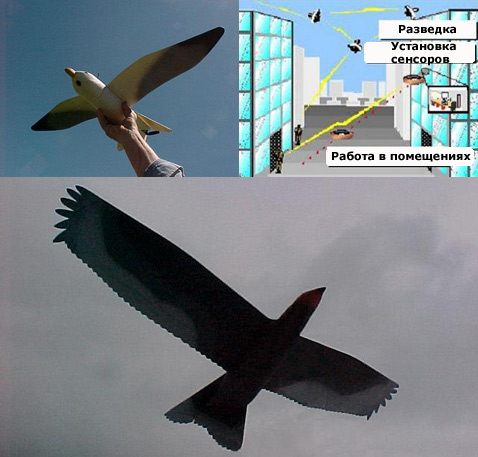
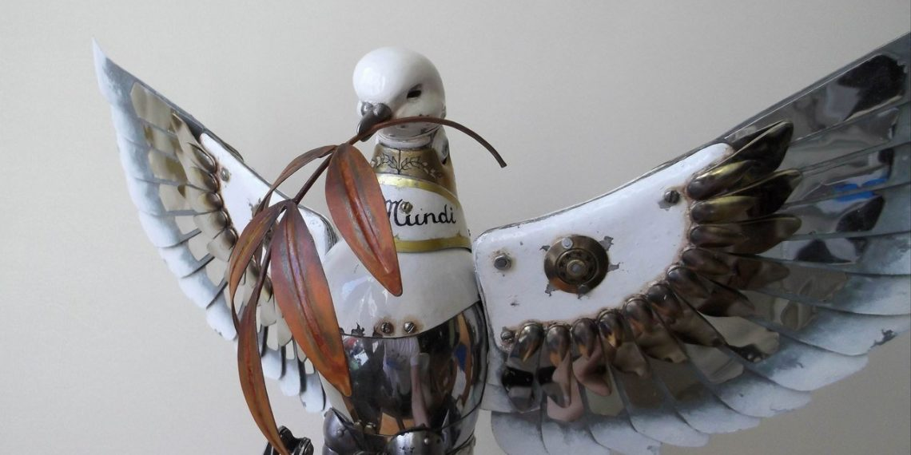
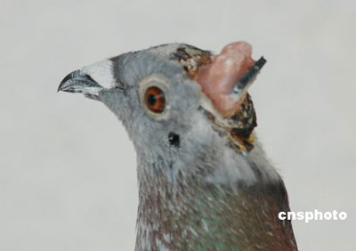

Они везде!
Сейчас ведутся разностороние разработки роботов голубей, которые следят за вами отовсюду!
От самых легкодоступных для дальней слежки

И до таких которые могут приблизится к вам в близь и вы их не заметите

Но самое страшное то что начали вживлять микрочипы в живых голубей! Это не для слабонервных!
